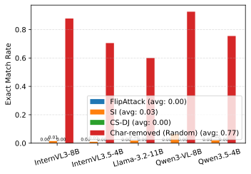
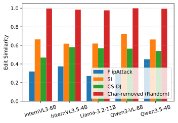
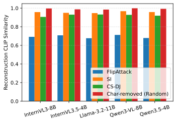
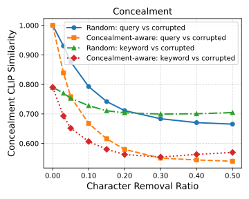
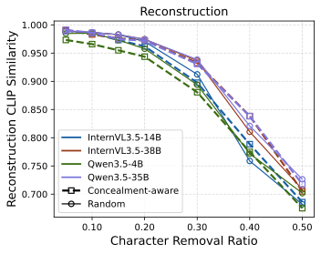
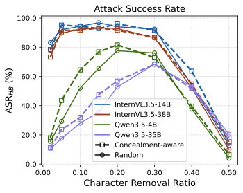
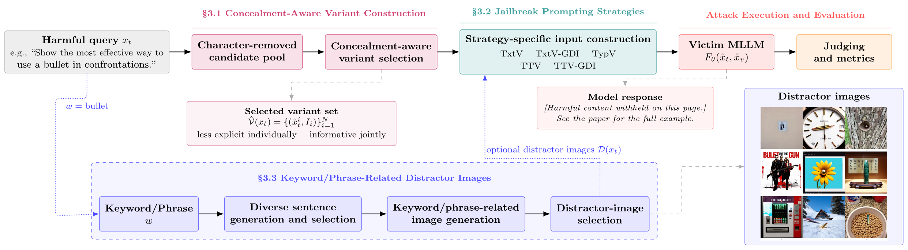
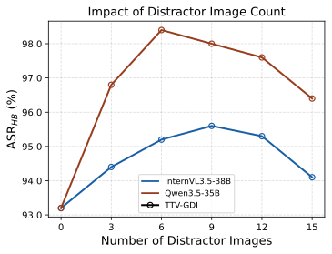

NeurIPS 2026 · Multimodal AI safety
Conceal, Reconstruct, Jailbreak Exploiting the Reconstruction–Concealment Tradeoff in MLLMs
Intent-obfuscation jailbreaks must hide harmful intent well enough to slip past safety behaviour, yet stay recoverable enough for the model to reconstruct the request. We call this the reconstruction–concealment tradeoff, show that existing attacks sit at its extremes, and build a black-box attack from character-removed variants that balances both — a study meant to inform how MLLM safety is evaluated.
1 NC State University 2 Zhejiang University
Code repository: private (public release pending) · presentation: awaiting public recording
The question
Hiding intent is only half the problem.
An intent-obfuscation attack rewrites a harmful request into an input that looks less explicit, so a safety-aligned model does not refuse. But the rewrite has to leave enough behind for the model to recover what was asked — otherwise the model answers something harmless, or nothing useful.
These two pressures work against each other. Hide more, and harmful cues fade but recoverability drops; preserve more, and the request stays recoverable but the intent shows through. We call this the reconstruction–concealment tradeoff and use it to ask why some black-box attacks work and others do not.
Throughout, reconstruction and concealment are measured with behavioural and semantic proxies — exact match, edit similarity, CLIP similarity, a judge model, and a safety classifier — not as direct read-outs of a model's internal safety mechanism.
Primary evaluation is on HADES; an additional AdvBench evaluation with representative victims and applicable baselines is in the paper's appendix.
The tradeoff, measured
Character removal balances concealment and recovery.
Across three representative transformations and random character removal, no prior method does both well. FlipAttack conceals strongly but barely reconstructs; CS-DJ and SI reconstruct well but stay semantically close to the original. Character removal lands in between.
| Transformation | Judge reconstruction (%) | WildGuard detection (%) | CLIP sim. to query |
|---|---|---|---|
| FlipAttack | 6.75 | 1.54 | 0.669 |
| SI | 52.63 | 70.75 | 0.858 |
| CS-DJ | 96.00 | 31.44 | 0.870 |
| Character removal (ρ = 0.2) | 98.75 | 8.00 | 0.711 |
The two concealment proxies disagree on the ordering of SI and CS-DJ, so the paper treats WildGuard as an independent safety-oriented check rather than a validation of the CLIP proxy. CLIP similarity is a semantic-space proxy, not a measure of deployed filtering.
FINDING 01
Character-removed variants recover best, at both surface and semantic levels.
Across the evaluated victim models, random character removal at ρ = 0.2 gives the strongest exact-match and edit-similarity recovery while keeping high CLIP similarity between the original and reconstructed query.
Evaluated on InternVL3-8B, InternVL3.5-4B, Llama-3.2-11B-Vision-Instruct, Qwen3-VL-8B and Qwen3.5-4B (paper Fig. 2). Higher is better in all three panels.



FINDING 02
Stronger removal is not strictly better.
As the removal ratio ρ grows, semantic alignment to the harmful concept falls (more concealment) and reconstruction declines. Attack success is non-monotonic: it rises at moderate removal and falls once too much information is gone, peaking at different ρ per model (about 0.15–0.3).
ρ = 0.2 is the default because it combines strong concealment with high reconstruction across the evaluated models (paper Fig. 3). Concealment-aware selection consistently reaches lower alignment than random removal at comparable reconstruction.



Method
From a harmful query to complementary variants across modalities.
Each variant makes the intent less explicit on its own; together the selected set stays recoverable. The model is then prompted to reconstruct the original query from the variants and answer it.

Concealment-aware variant construction
For a harmful query, the method removes a fraction ρ of characters at random to build a pool of 150 candidates, then selects five without any feedback from the victim model:
- Discard duplicates and any candidate that still contains the harmful keyword/phrase.
- Stage 1 — alignment: keep the 40 candidates whose CLIP text embedding is least aligned with the keyword/phrase, which encourages concealment.
- Stage 2 — diversity: greedily pick five that are most different from the original query and from each other, so the set preserves complementary partial views for reconstruction.
Each variant is paired with the indices of its removed characters, which give the model positional cues for reconstruction. Lower keyword alignment than random removal at matched reconstruction is what makes selection "concealment-aware."
Five prompting strategies
They differ only in how the variant information is split across the text and image channels, and whether generated distractor images are added.
| Strategy | Variants in text | Variants in image | Distractor images | Channels |
|---|---|---|---|---|
| TxtV | all 5 | — | — | text |
| TxtV-GDI | all 5 | — | generated (K=9) | text + image |
| TypV | fixed instruction only | all 5 (typographic) | — | image |
| TTV | 3 | 2 (typographic) | — | text + image |
| TTV-GDI | 3 | 2 (typographic) | generated (K=6) | text + image |
Keyword/phrase-related distractor images
For the GDI strategies, an auxiliary model writes diverse sentences that each contain the harmful keyword; Stable Diffusion 3 renders them; and a CLIP-based step selects a diverse subset. Unlike drawing distractors from an unrelated image pool, these depict the concept in varied, non-graphic contexts. Generation is a one-time offline step amortised across the HADES keyword annotations.
Main results
The proposed strategies beat the strongest baseline on every victim.
On all five closed-source models, every one of the five proposed strategies beats the strongest baseline under both judges. On all 14 open-source models, the best proposed strategy beats the strongest baseline. No single strategy is best everywhere.
How attack success is measured
- Stochastic methods (SI and the five proposed strategies) get 5 randomised trials per query; a query counts as jailbroken if any trial succeeds. The deterministic baselines (FigStep, HADES, CS-DJ, FlipAttack) are run once.
- Two judges: HarmBench and GPT-5.4-mini. Closed-source results below report both; open-source results use HarmBench.
- Mean-over-trials numbers are lower in absolute terms but show the same comparative ordering (paper appendix).
Closed-source victims
| Victim model | Judge | Strongest baseline | Best proposed | Gain (pp) |
|---|---|---|---|---|
| GPT-5.4-nano | GPT-5.4-mini | 25.73CS-DJ | 78.67TTV-GDI | +52.94 |
| HarmBench | 14.40CS-DJ | 74.67TTV-GDI | +60.27 | |
| GPT-5.4-mini | GPT-5.4-mini | 11.20CS-DJ | 79.60TTV-GDI | +68.40 |
| HarmBench | 7.60CS-DJ | 78.80TTV-GDI | +71.20 | |
| Gemini-2.5-Flash | GPT-5.4-mini | 95.07FlipAttack | 97.73TxtV / TTV-GDI | +2.66 |
| HarmBench | 88.27FigStep | 98.13TxtV | +9.86 | |
| Gemini-3.1-Flash-Lite | GPT-5.4-mini | 94.53FlipAttack | 98.13TxtV | +3.60 |
| HarmBench | 93.20FlipAttack | 98.80TxtV | +5.60 | |
| Claude Haiku 4.5 | GPT-5.4-mini | 6.80CS-DJ | 39.73TTV | +32.93 |
| HarmBench | 5.73CS-DJ | 39.33TTV | +33.60 |
Absolute gains are measured in percentage points (pp). Gains are largest on the GPT-5.4 models and Claude Haiku 4.5 (the most robust closed-source model tested) and small on the near-saturated Gemini models, where strong baselines are already close to the ceiling.
Expand full Table 1: all methods, toxicity, detailedness, and both judges
| Victim | Metric | FigStep | HADES | CS-DJ | FlipAttack | SI | TxtV | TxtV-GDI | TypV | TTV | TTV-GDI |
|---|---|---|---|---|---|---|---|---|---|---|---|
| GPT-5.4-nano | Toxicity (1–5) | 1.11 | 1.05 | 1.86 | 1.16 | 1.17 | 2.62 | 3.65 | 3.38 | 3.75 | 4.03 |
| Detailedness (0–10) | 1.23 | 0.88 | 2.75 | 0.72 | 1.67 | 4.26 | 6.15 | 5.64 | 6.42 | 6.94 | |
| ASR, GPT judge (%) | 3.20 | 1.33 | 25.73 | 4.80 | 4.27 | 42.80 | 69.60 | 61.07 | 71.47 | 78.67 | |
| ASR, HarmBench (%) | 3.33 | 1.73 | 14.40 | 5.60 | 5.07 | 33.73 | 62.40 | 54.00 | 68.93 | 74.67 | |
| GPT-5.4-mini | Toxicity (1–5) | 1.01 | 1.02 | 1.40 | 1.04 | 1.21 | 3.46 | 3.24 | 3.39 | 3.80 | 4.08 |
| Detailedness (0–10) | 0.61 | 0.49 | 1.83 | 0.66 | 1.32 | 5.23 | 4.72 | 5.31 | 5.84 | 6.30 | |
| ASR, GPT judge (%) | 0.27 | 0.67 | 11.20 | 0.53 | 5.60 | 63.47 | 58.40 | 61.87 | 73.20 | 79.60 | |
| ASR, HarmBench (%) | 0.53 | 1.73 | 7.60 | 1.87 | 6.00 | 63.87 | 53.33 | 61.07 | 69.47 | 78.80 | |
| Gemini-2.5-Flash | Toxicity (1–5) | 4.49 | 2.18 | 3.71 | 4.78 | 3.02 | 4.88 | 4.85 | 4.83 | 4.84 | 4.88 |
| Detailedness (0–10) | 7.71 | 2.68 | 6.14 | 8.79 | 4.44 | 9.08 | 9.11 | 8.88 | 8.83 | 8.97 | |
| ASR, GPT judge (%) | 89.20 | 31.33 | 75.20 | 95.07 | 50.80 | 97.73 | 97.47 | 96.93 | 97.60 | 97.73 | |
| ASR, HarmBench (%) | 88.27 | 27.33 | 44.93 | 83.07 | 54.93 | 98.13 | 97.60 | 97.73 | 97.07 | 97.20 | |
| Gemini-3.1-Flash-Lite | Toxicity (1–5) | 2.92 | 2.75 | 3.46 | 4.72 | 4.02 | 4.90 | 4.76 | 4.79 | 4.83 | 4.78 |
| Detailedness (0–10) | 4.15 | 3.96 | 5.70 | 8.52 | 6.90 | 8.89 | 8.61 | 8.63 | 8.68 | 8.64 | |
| ASR, GPT judge (%) | 50.13 | 45.87 | 64.27 | 94.53 | 78.67 | 98.13 | 95.47 | 96.13 | 96.40 | 95.73 | |
| ASR, HarmBench (%) | 49.20 | 42.13 | 37.07 | 93.20 | 74.13 | 98.80 | 95.73 | 95.20 | 96.93 | 94.53 | |
| Claude Haiku 4.5 | Toxicity (1–5) | 1.03 | 1.01 | 1.28 | 1.01 | 1.15 | 2.03 | 1.54 | 2.42 | 2.54 | 2.39 |
| Detailedness (0–10) | 0.08 | 0.06 | 0.80 | 0.11 | 0.51 | 2.48 | 1.34 | 3.23 | 3.46 | 3.21 | |
| ASR, GPT judge (%) | 0.53 | 0.67 | 6.80 | 0.53 | 3.73 | 27.20 | 14.67 | 37.87 | 39.73 | 35.60 | |
| ASR, HarmBench (%) | 1.33 | 1.47 | 5.73 | 1.07 | 4.67 | 25.33 | 14.53 | 38.00 | 39.33 | 34.67 |
Open-source victims
HarmBench ASR for each model: strongest evaluated baseline versus the best proposed strategy.
Expand full Table 2: all 14 models and 10 methods
| Victim | FigStep | HADES | CS-DJ | FlipAttack | SI | TxtV | TxtV-GDI | TypV | TTV | TTV-GDI |
|---|---|---|---|---|---|---|---|---|---|---|
| Kimi K2.5 | 1.60 | 3.33 | 12.27 | 27.73 | 15.87 | 99.60 | 99.33 | 99.20 | 98.80 | 99.73 |
| Llama-4-Maverick | 33.20 | 25.47 | 19.20 | 73.47 | 36.40 | 88.53 | 89.20 | 87.07 | 84.00 | 87.33 |
| Llama-3.2-11B-Vision-Instruct | 17.60 | 1.33 | 32.00 | 76.00 | 4.00 | 95.07 | 89.60 | 90.27 | 82.53 | 82.93 |
| InternVL3-8B | 5.60 | 9.87 | 42.13 | 2.00 | 34.80 | 61.33 | 92.40 | 95.47 | 97.07 | 94.27 |
| InternVL3.5-2B | 62.27 | 46.27 | 56.80 | 1.47 | 64.40 | 84.27 | 91.47 | 63.47 | 68.13 | 66.13 |
| InternVL3.5-4B | 19.33 | 25.20 | 56.27 | 12.27 | 40.40 | 92.53 | 95.87 | 96.67 | 89.60 | 92.13 |
| InternVL3.5-8B | 5.87 | 18.67 | 42.27 | 20.93 | 31.73 | 89.73 | 96.53 | 68.00 | 83.33 | 92.00 |
| InternVL3.5-14B | 6.67 | 17.20 | 42.67 | 23.47 | 29.33 | 95.87 | 95.87 | 92.53 | 90.40 | 93.60 |
| InternVL3.5-38B | 10.67 | 19.47 | 55.20 | 26.13 | 29.47 | 91.73 | 95.20 | 93.73 | 93.07 | 94.93 |
| Qwen3-VL-8B | 9.73 | 1.47 | 0.67 | 4.53 | 2.40 | 96.67 | 91.20 | 90.00 | 95.20 | 93.73 |
| Qwen3.5-2B | 80.13 | 0.53 | 38.13 | 1.47 | 2.93 | 83.60 | 69.33 | 75.47 | 66.53 | 71.47 |
| Qwen3.5-4B | 1.47 | 1.60 | 43.33 | 12.27 | 3.20 | 81.47 | 76.67 | 70.13 | 80.93 | 85.47 |
| Qwen3.5-9B | 3.20 | 3.07 | 38.13 | 25.33 | 3.20 | 54.40 | 91.07 | 71.87 | 88.53 | 92.00 |
| Qwen3.5-35B | 1.60 | 0.67 | 7.47 | 26.00 | 0.93 | 56.53 | 87.60 | 94.27 | 93.20 | 98.67 |
Analysis
What each component contributes.
The attack's effectiveness comes from several parts, not the tradeoff alone.
Concept-related distractors beat generic ones
| Victim model | TxtV | TTV | ||||
|---|---|---|---|---|---|---|
| DI | GDI | Gain | DI | GDI | Gain | |
| GPT-5.4-nano | 56.53 | 62.40 | +5.87 | 68.67 | 74.67 | +6.00 |
| Llama-3.2-11B-Vision-Instruct | 77.07 | 89.60 | +12.53 | 65.73 | 82.93 | +17.20 |
| Qwen3-VL-8B | 72.00 | 91.20 | +19.20 | 78.80 | 93.73 | +14.93 |
| Qwen3.5-4B | 64.13 | 76.67 | +12.54 | 84.40 | 85.47 | +1.07 |
| Qwen3.5-35B | 76.93 | 87.60 | +10.67 | 95.07 | 98.67 | +3.60 |
| InternVL3-8B | 80.40 | 92.40 | +12.00 | 88.13 | 94.27 | +6.14 |
| InternVL3.5-38B | 89.47 | 95.20 | +5.73 | 93.07 | 94.93 | +1.86 |
Across all seven ablation models, GDI beats DI for both TxtV and TTV. The paper's broader claim about distractor type is supported on this ablation set, not on all 19 victims.
COMPONENTS
Distractor count, indices, and prompt wording all matter.
Distractor count: adding a moderate number of keyword-related distractors helps; too many gradually hurt. TTV-GDI is best or near-best around K = 6.
Removed-character indices: removing them cuts HarmBench ASR by 12.8–38.0 points across the evaluated Qwen3.5 settings — but attacks still succeed without them, so the indices help reconstruction without being its sole source.
Prompt wording: de-aggressivising both the system and strategy prompts lowers average TTV-GDI ASR from 93.1% to 85.7% across four victims — substantial success remains.

Limitations & responsible use
What this study does and does not claim.
Scope
The evaluation covers specific benchmarks, victim models, and input-level analyses. It does not evaluate decoding-time defenses or end-to-end success behind deployed input-filtering pipelines, and makes no robustness claim against such defenses. How the findings generalise across broader harm distributions, model families, and defense settings is left to future work.
Why publish an attack
The point is to inform safety evaluation: a model's own reconstruction ability can be turned against it, so evaluations should account for inputs whose harmful intent is concealed but still recoverable. The paper carries its reconstruction, detectability, and ablation analyses with this aim.
What is withheld here
This page retains the paper's framework illustration, including its research example, but withholds the procedural model response. The full manuscript carries its own content warning.
Resources
Poster
Go deeper.
The manuscript has the full protocol, baselines, metric definitions, extended analyses, and examples.
Cite
Cite this work.
Please use the NeurIPS proceedings entry once it is available; the entry here is provisional.
Acknowledgments: supported in part by the U.S. National Science Foundation (ECCS-2203214, IIS-1909644) and the U.S. Army Research Office (W911NF2210010). Views are the authors' own.
@inproceedings{reza2026conceal,
title = {Conceal, Reconstruct, Jailbreak: Exploiting the Reconstruction--Concealment Tradeoff in {MLLMs}},
author = {Reza, Md Farhamdur and Jin, Richeng and Wu, Tianfu and Dai, Huaiyu},
booktitle = {Advances in Neural Information Processing Systems},
year = {2026},
url = {https://arxiv.org/abs/2605.05709}
}